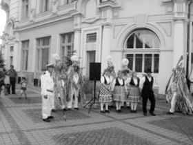
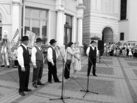
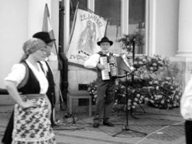
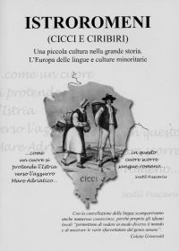

La Sibiu, în zilele de 5-6 septembrie, s-a desfășurat Simpozionul "Repere cultural-istorice istroromâne"
Recunoașteți zilele săptămânii: lur(i), utora, sreda, cetarta, virer(i), sumbota, dumireca; sau numerele: ur, doi, tre, påtru, cinci, șåse, șapt, opt, devet, deset. Vă sunt oarecum familiare, cu toate că unele cuvinte par a fi dintr-o altă lume, decât cea românească? Dar sintagmele: bura zi/bura zua, bura dumăreața, bire ați verit, veriți cu noi, de ce așteptăm, eu voi fi cu tire, hai să haulim, viro iceea (vino aici) sau cale bura (cale - drum bun)?
 Acestea au cam fost primele cuvinte notate, în amiaza zilei de vineri, 5 septembrie 2008, după coborârea din autocar,a celor 24 de participanți la Simpozionul "Repere cultural-istorice istroromâne," organizat de Complexul Național Muzeal ASTRA Sibiu, în colaborare cu Associazione de amicizia italo-romena Decebal (Trieste, Italia) și Consiliul Județean Sibiu, proiect finanțat cu sprijinul Administrației Fondului Cultural Național (vezi Ziua, 6 septembrie 2008).
De la început trebuie spus că o expoziție, o dezbatere și un spectacol s-au constituit, două zile, într-un regal de informație, cunoaștere și frățietate româno-istroromâna, acțiune socotita "un miracol, dacă oficilitățile noastre guvernamental-parlamentare se vor angaja în procesul de salvare a ultimilor trăitori de stirpe latină din munții Peninsulei Istria, a puținilor vorbitori ai dialectului istroromân," cum spunea conf. univ. dr. Viorica Bălțeanu, de la Universitatea de Vest - Timișoara, președinta Asociației Cultural-Istorice Dante Aligheri, care a citit și Mesajul trimis de către deputatul basarabean Vlad Cubreacov, membru al Adunării Parlamentare a Consiliului Europei, inițiatorul Proiectului de Rezoluție la Strasbourg, privind trecutul și actualitatea acestei etnii, intitulat "Istroromânii trebuie salvați!" El avertiza că avem "o ultimă șansă să facem din problema salvării istroromânilor o prioritate națională. Pentru a reuși, trebuie să insistăm pe câteva direcții: aducerea urgentă a chestiunii istroromânilor pe agenda forurilor europene și internaționale, sensibilizarea și determinarea statului croat și a celui român, pentru o implicare instituțională și financiară efectivă, stabilirea unor legături vii și durabile între colectivitățile locale sau comunitățile religioase din țara de rudenie, România, și satele istroromâne Sușnievița și Jeiăni, conjugarea eforturilor tuturor persoanelor, române și străine, precum și a instituțiilor preocupate de complexa și dificila problematică istroromână."
O expoziție fără egal
 Ce a căutat la Constanța, a găsit. Ce a căutat în munții Istriei, a găsit. Destinul i-a fost favorabil tânărului italian, de acum vreo trei decenii, încât a reușit, după îndelungi pertractări oficiale, să-și aducă aleasa inimii în orașul-port Trieste, inginera Elena Pântazescu-Curtis devenind cu timpul principalul colaborator și susținător al doctorandului Ervino Curtis, șef al Departamentului pentru relații internaționale al portului liber de la Adriatica. De dragul șotiei, el învățase binișor limba română, drept care, într-o zi i-a auzit pe câțiva muncitori veniți din Croația vecină rostind cuvinte apropiate de ceea ce el știa... Așa a aflat de existența dialectului istroromân, încă vorbit doar de câteva sute de locuitori ai muntelui Učka Gora (Monte Maggiore), din nord-estul Peninsulei Istria, la vreo 25 km de orașul-port Rijeka (Fiume).
Pasionat de istorie, studiind și documentându-se în mari biblioteci italiene, austriece, românești și iugoslave, Ervino Curtis a inițiat Asociația Decebal (1987), cu scopul de a repune în valoare aceasta mică etnie, cea mai "occidentală" poarta a românismului, acum pe cale de dispariție. După ani de cercetări în satele și cătunele din zona amintită, a strâns un bogat material iconografic, a cules texte originale și a înregistrat audio-video numeroase momente ale existenței puținilor supraviețuitori. Încurajat și ajutat de către cercetători și universitari din Timișoara, Cluj, Praga, Pola, Veneția, Roma și Viena, Ervino Curtis a demarat un Proiect susținut de UE, realizând o expoziție unicat "Istroromânii ieri și azi," cuprinzând 60 de panouri cu hărți, fotografii, înscrisuri și alte exponate, cu ea poposind în Trieste, Topo-Spilimbergo, Veneția, Timișoara și acum la Sibiu, pregătită pentru o călătorie peste Ocean, la invitația disporei istroromâne din New York. Datorită aceleiași inițiative, anul trecut a apărut volumul ilustrat Istroromeni (Cicci e Ciribiri), "Una piccola cultura nella grande storia. L’Europa delle lingue e culture minoritarie," cu prilejul aniversării a două decenii de la înfiițarea asociației sale.
Mai sunt câteva sute
 Recitiți aceasta fraza: "ur uom a fost siromah, n-a vut da lu feciori mânca, și ce zmilit, che va ur fecior ucide și che va da poidi lu cel-i alți". Asta înseamnă (cf. Elena Pântazescu-Curtis): "un om a fost foarte sărac, n-a avut să dea de mâncare la copii, și ce s-a gândit că va ucide un copil și că va da de mâncare la ceilalți"...
Povestea cumplită poate data din timpul groaznicei epidemii de ciumă (a doua jumătate a sec. al XV-lea) care a decimat populația Istriei (și nu numai); aparținând Veneției, aceasta a hotărât repopularea zonei, aducându-i pe morlacii sau mavrovlahii (atestați încă din sec. al XII-lea) din Balcani, în locuri unde mai existaseră populații de origine latină, o parte dintre ei numiți cici (sau cicci), italienii zicându-le cicerani, de unde și zona se cheamă Ciceria, aflată apoi în plin proces de slavizare (sec. XVII). Astăzi, din toata Ciceria, numai în Jeiăni se mai vorbește dialectul istroromân. Acolo, în munți, trăia, de multe veacuri, o mică etnie străromână, dovada existenței ei găsindu-se în toponimii păstrate peste timp. Aici au poposit "pribegii," uscoci dinspre Banat și Maramureș, creând, așezări de o parte și de alta a muntelui, rezistând cu stoicism numeroaselor stăpâniri/dominații: venețiene, austriece, franceze, apoi din nou austro-ungare și după aceea, iugoslave, italiene și iar iugoslave; zona trăitorilor istroromânilor fiind împărțită ulterior între Italia, Slovenia și Croația. La începutul secolului al XIX-lea, prin alipirea Istriei la Italia, cele șapte sate istroromanesti au fost reunite sub numele "Comune di Valdarsa," cu sediul administrativ în Sușnievița. Ca și în toate țările balcanice, procesul de slavizare a însemnat pentru istroromâni o diminuare semnificativă (de la aproape șapte mii, la începutul mileniului al II-lea, la câteva sute, actualmente). Mai mult, Croația recunoaște azi 14 minoritati, dar nu și pe istroromâni! Asta și din cauza faptului că lipsește cu desăvârșire voința politică a Bucureștiului, la nivelul Ministerului de Externe, de a se stabili un cadru juridic pentru tutela lingvistica, prin școală, a acestor oameni, conform normelor "Cartei europene a limbilor regionale sau minoritare" și a "Tratatului româno-croat," din 18 februarie 1994. Este vremea să fie ascultate și asimilate acțiunile Asociației cultural-istorice istroromâne Andrei Glavina, înființate la Trieste, în 1994, care a ținut primul Congres internațional istroromân, la Universitatea din Pola (30 martie - 1 aprilie 2000), unde s-a rostit, pentru întâia oară, într-o aulă academică, singurul discurs în grai istroromân! Reprezentantul Departamentului pentru relații cu românii de pretutindeni a promis atunci marea cu sarea, dar totul a rămas literă moartă, "ceea ce a dus la schimbarea atitudinii populației locale față de aceste autorități și, din păcate, vai, și față de România, compromițând toată lunga activitate a membrilor Asociației Andrei Glavina, de insuflare a dragostei și respectului față de țară" (Emil Petru Rațiu, Președinte).
Profesori, "informatori" și clopotari
Șapte tineri tapeni se îmbracă în piei de oaie, își leagă, cu o funie cât brațul de groasă, un brâu de piele, de care își anina câte șase tălăngi/clopote, punându-și pe cap un fel de soare, din care curg până-n pământ zeci de panglici multicolore. Îi conduce un staroste, cu flueră, zăngănind asurzitor pe ulițe, în zilele de Crăciun până după Anul Nou. E procesiunea "clopotarilor din Jeiăni" prin cătunele istroromâne, de parcă ne-am afla în așezările maramureșene unde se mai poartă rotacismul. I-am întrebat cum se numesc, iar ei mi-au răspuns, tot cu o întrebare, adică "com te chemi?" Cei șapte "zvonciari" sunt: Marin, Daniel, Anton, Mateo, Andrei, Ion și Alexandru; acestea-s prenumele, numele fiindu-le slavizate, cu "-ici în coadă".
 Ei sunt a doua oară în România, după "Festivalul Inimilor" din Timișoara, dar, alături de mult mai mulți cântăreți și dansatori, au mai bătut și alte meleaguri europene, datorită organizațiilor Decebal și Glavina. La Sibiu, în Piața Mare, cu un "Târg al olarilor," prezența lor a atras ca un magnet, în câteva minute adunându-se mii de spectatori. Este începutul unei inițiative patronate de Complexul Național Muzeal ASTRA (director general prof. dr. Corneliu Bucur), o contribuție substanțială având-o timișorenii, ca înâintemergători în studierea limbii, istoriei, culturii și obiceiurilor acestei etnii sud-dunărene.
Despre toate aspectele multidisciplinare istoric-dialectologice au vorbit specialiștii Vasile Frățilă, Ervino Curtis, Petru Rațiu, Ana Maria Pop, Viorica Bălțeanu, Richard Sârbu, Lucian Miclăuș, Valer Deleanu, Ovidiu Baron și Elena Potoroacă. Simpozionul s-a încheiat cu prezentarea celor două filme documentare despre istroromâni, unul realizat anii trecuți de către doi italieni, celălalt, în premieră, nefinisat, după ce fuseseră trase 11 casete, de către echipa CNM "ASTRA," în urma unei recente expediții în satele Jeiăni și Sușnievița. Specialiștilor le-au fost de mare ajutor "informatorii" prezenți și aici Vilim Sancović, Pepo, Jelko, Radu și Edo Doričić (de la românescul dor), mereu dispuși să grăiască și să cânte în "rumârește".
Concluzia: dacă statul român nu ia în seamă existența acestei minorități, supuse de-a lungul veacurilor deznaționalizării, în câțiva ani nu vom mai putea vorbi despre al patrulea dialect al limbii române. Aduceți câțiva tineri de acolo, să rostească în istroromâna și să învețe limba română; înființati grădinițe și școli acolo, investiți în mica industrie locală și în turismul rural, mai ales că acolo valoarea pământului este derizorie, pentru ca tinerii să nu-și părăsească obârșia.
"Clopotarii - Želanski zonciari" să anunțe în fiecare An Nou că sunt stirpe de români și nu le mai este frică să-și afirme etnia (vezi și Ziua, din 19 și 28 iulie și 1 august 2008). Completând spusa savantului Sextil Pușcariu, în 1926, astăzi riscam să scriem, foarte curând, după cum spunea prof. Emil Ratiu, "în Provincia Istria nu mai curge sânge românesc".
Avem o ultimă șansă să facem din problema salvării istroromânilor o prioritate națională. - Vlad Cubreacov
"Ca o inima se profilează pe albastrul Mării Adriatice Provincia Istria. În aceasta inimă curge și sânge românesc" - Sextil Pușcariu, 1926
Valentin Hossu-Longin
September 13, 2008
© 2008 Ziua